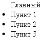
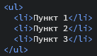
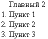
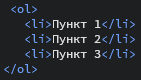

Создание списков
Списки - текстовые наборы с нумерованным или маркированным типом строения. Это необходимо для того чтобы чётко и по пунктам видеть из чего состоит тот или иной описываемый элемент.
Маркированный список, построенный простыми тэгами: , а так в html:. Слово "Главный" - произвольное слово, которое можно и не указывать, если это не требуется.
Нумерованный список, не более сложного строения:, а так в html:.